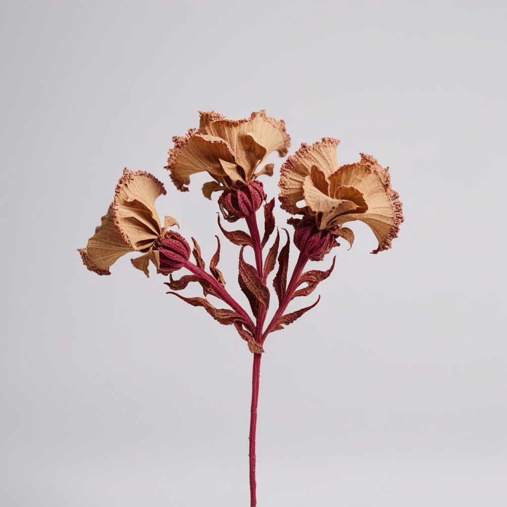
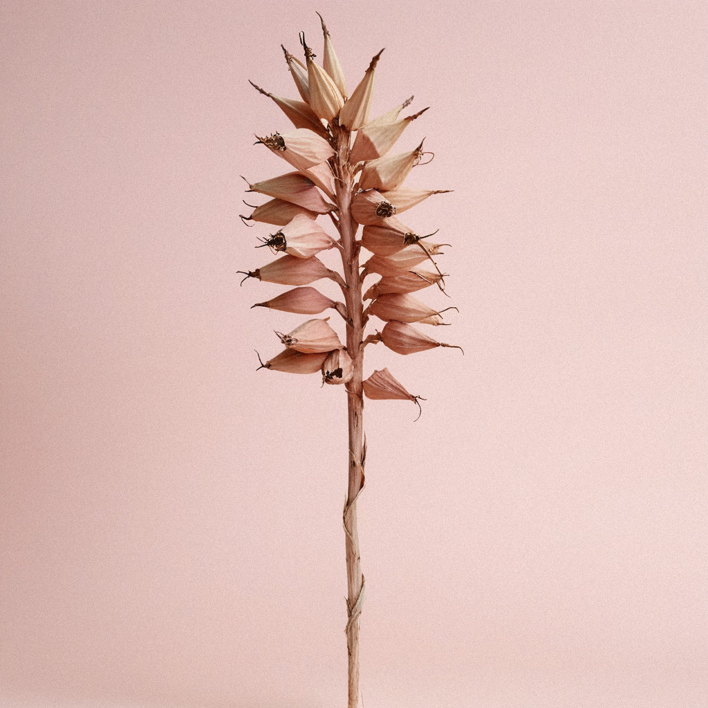
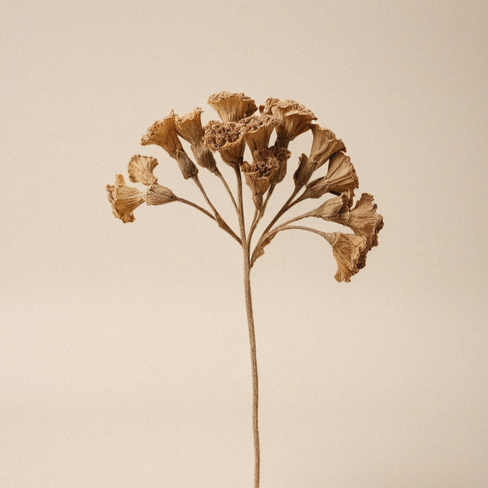
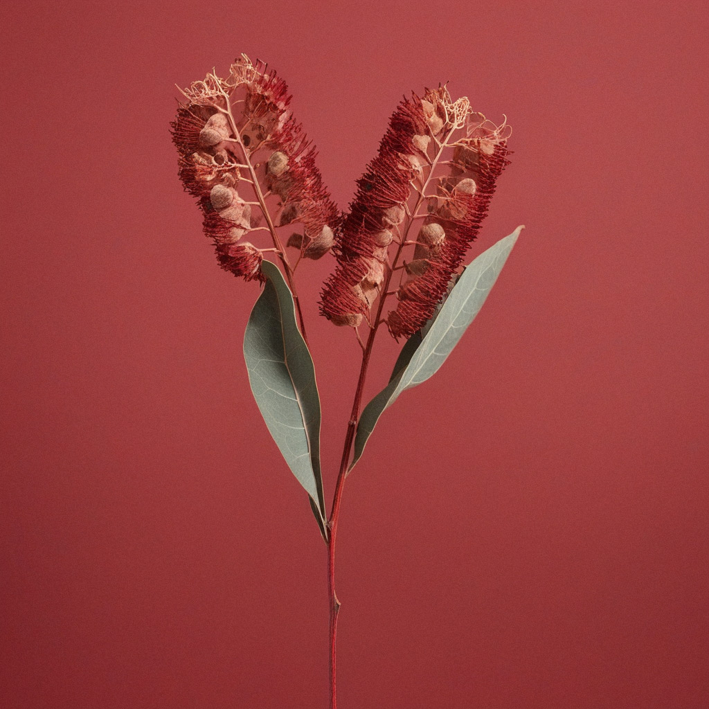
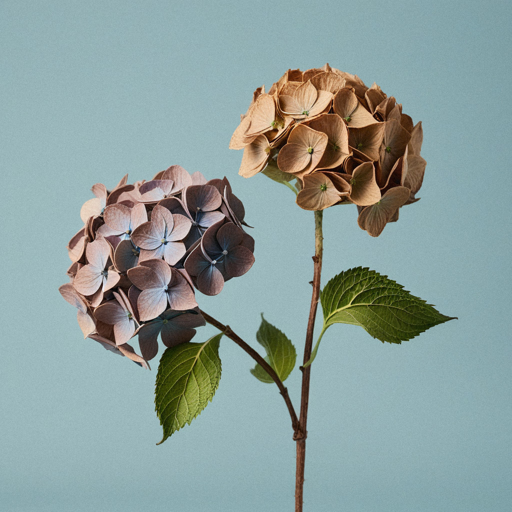
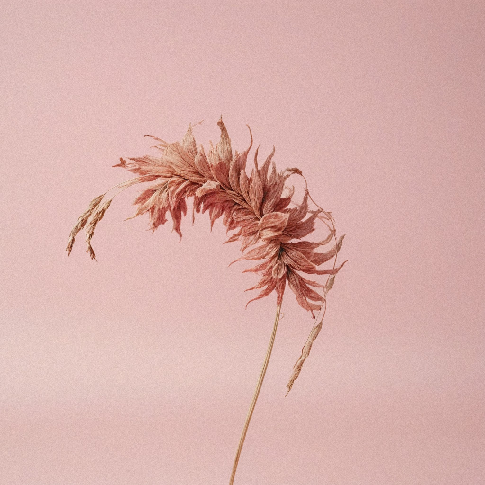
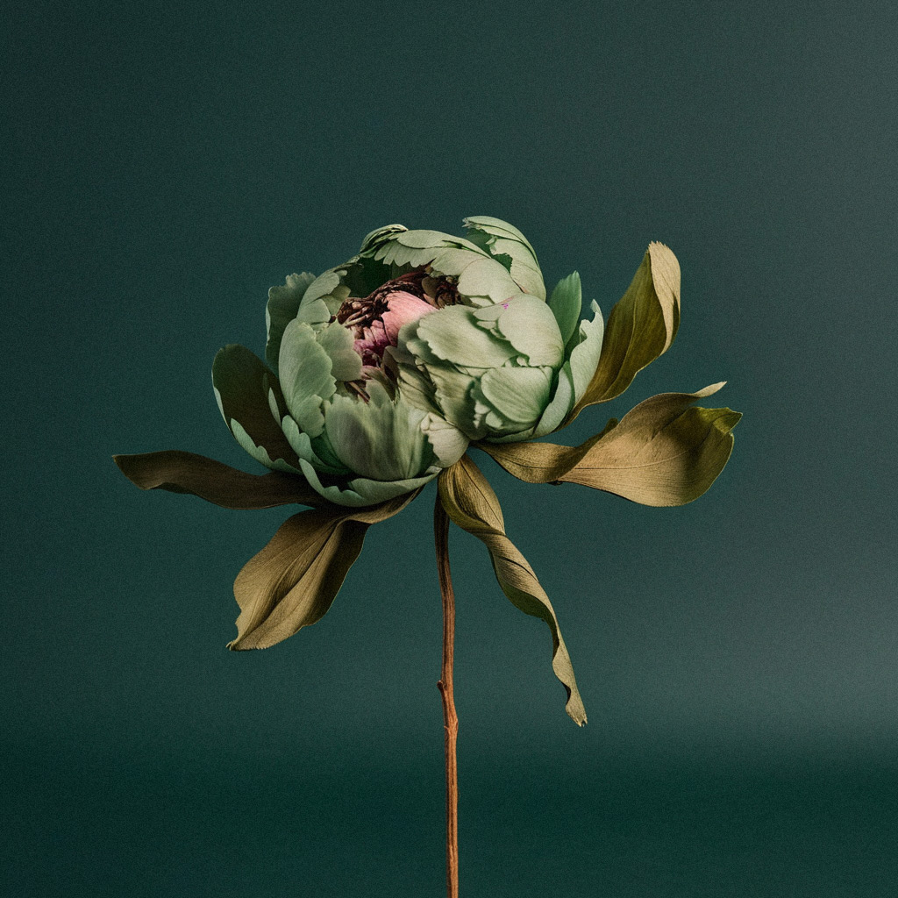
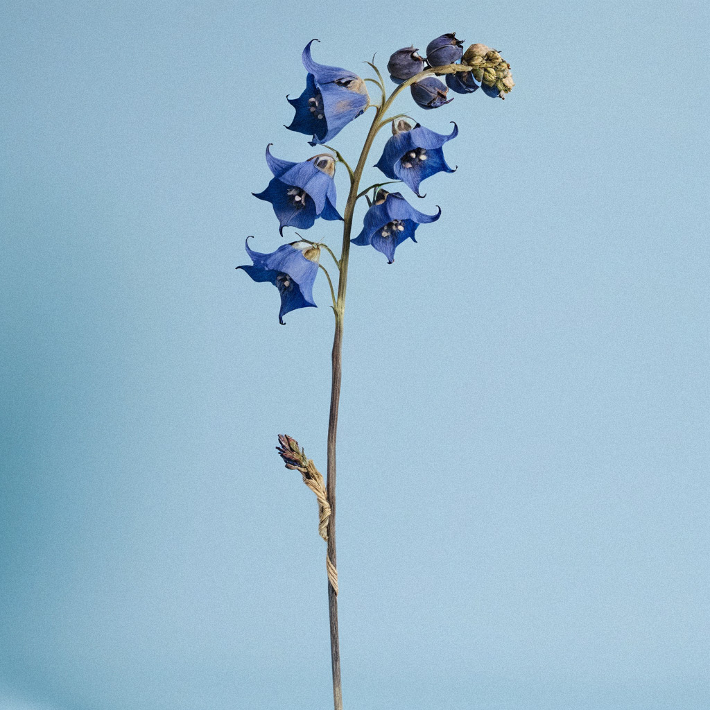
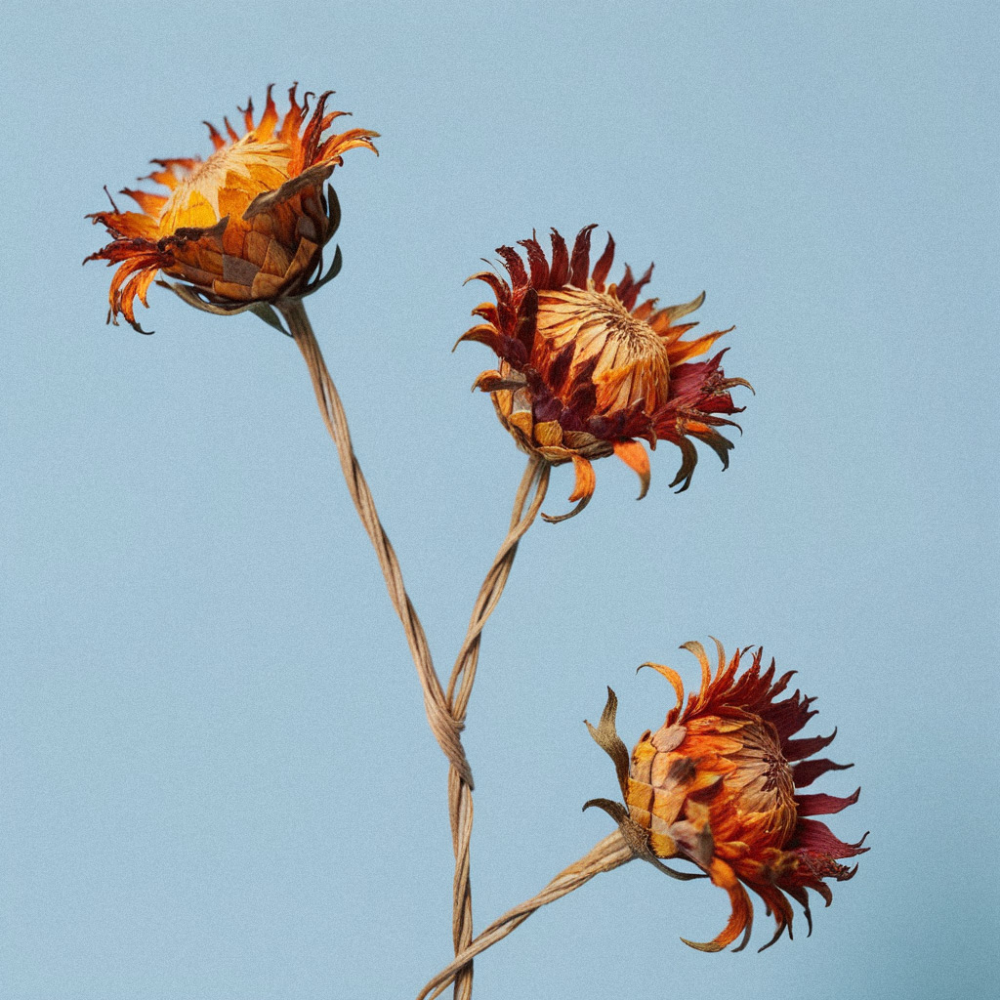

-

Dried roses retain their timeless allure, their delicate petals frozen
$276.32 -

Dried lilies emerge as ethereal remnants of nature’s artistry.
$276.32 -

Dried delphiniums retain their ethereal allure and majestic stature
$276.32 -
Dried tulips evoke memories of springtime splendor, their vivid hues
$276.32
-

Renowned for their exotic allure, dried orchids exude an air of mystery and sophistication, their intricate blooms and intricate details captured in a state of timeless grace
$320.64 -

Once the embodiment of summer’s warmth, dried sunflowers radiate a golden glow, their cheerful disposition and bold presence lending a touch of sunshine to any space
$320.64

-

Dried daisies emerge as cheerful reminders of nature’s simple pleasures
$476.02 -

Dried carnations exude an understated elegance and delicate fragrance
$276.32 -

Dried chrysanthemums emerge as intricate symbols of longevity and beauty
$476.02 -
Dried dahlias emerge as captivating remnants of summer’s splendor
$276.32
-

Once the heralds of spring’s arrival, dried irises retain their regal elegance, their slender stems and graceful blooms reminiscent of royalty in nature’s court
$320.64 -

Dried magnolias emerge as exquisite tokens of Southern charm, their velvety petals and subtle fragrance capturing the essence of a bygone era
$320.64